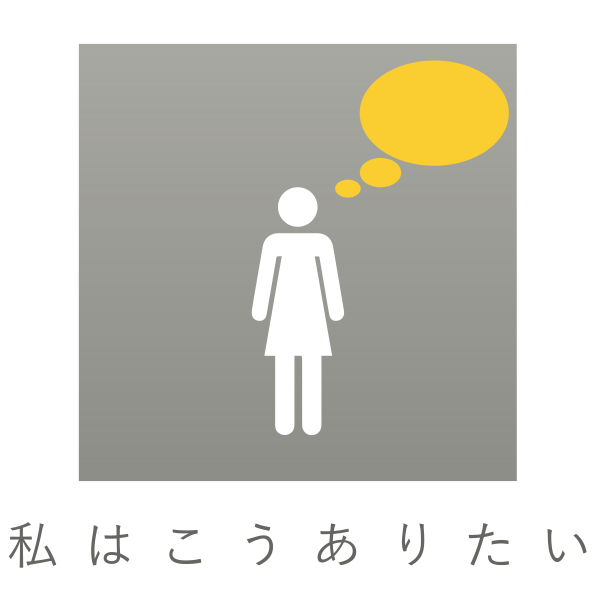

- genre
- style
- tool
ロゴデザイン・ウェブデザイン
課題制作・自主制作
illustrator｜HTML｜css｜JavaScript
デザインで、明かりを灯す。
これからの自分の指針を決めるためにパーソナルアイデンティティを考えました。その考えを表現したロゴと名刺、ポートフォリオサイトを制作しました。デザインへの向き合い方や、私がどうありたいかを伝えられるようにデザインしています。
イメージを整理し、分かりやすく伝えられるように心がけました。具体的なモチーフとして一貫して「灯台」を用いています。

-

人と人、人とものが出会うきっかけになるようなデザインをしたい。
思い切って飛び込む度胸と、流されない芯を持った人になりたい。
-
光で船の行き先を示す。
海を照らし美しく演出をする。
強く凛とそびえ立っている。
ブレインストーミングやマインドマップ制作の過程を経て、自分が今後どうありたいかという自己理解を深めました。
自分のこれからの指針と灯台の持つ役割を重ね合わせることができると考えたので、「灯台」をモチーフにしてロゴを制作しました。
「灯台」をモチーフにしたロゴマークです。周りを明るく照らして船を導く役割を持つ灯台と自分を重ね合わせ、デザインを通して光を灯せるような存在になりたいという想いを込めています。
また、強くそびえたつ灯台のように、周りにすぐに流されない意志を持つ人でありたいという目標も込めました。
制作したロゴマークを「minato」の「A」に見立てて、タイポグラフィーを制作しました。
フォントは CenturyGothic を基にして、全体のバランスを整えながら構成を見直していきました。太めのゴシック体にすることで、あたたかみと力強さを出したいと考えました。
また、発想することと型にとらわれすぎないこと、という意味を込めて「i」の点をずらしています。
コンセプトは、人と人、人と物が出会うきっかけになるようなデザインをしたいという想いです。
そこで、旅立つ人やここへ来る人、届ける物や届いた物などが行き交い出会いがある場所として港をモチーフにしてサイトを制作しました。
ファーストビューに用いるために、p5.jsで波のアニメーションを制作しました。
他の色との調和性が高く、周囲の色を引き立てる印象のある、黄味の灰色、柔らかい緑色を選択しました。
人やものに光を当てるという意味から、黄色も取り入れています。